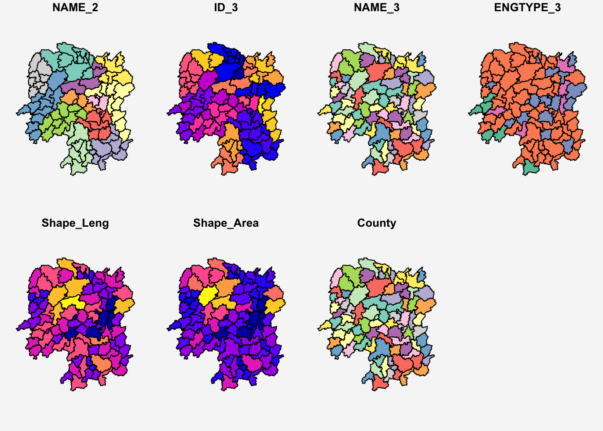
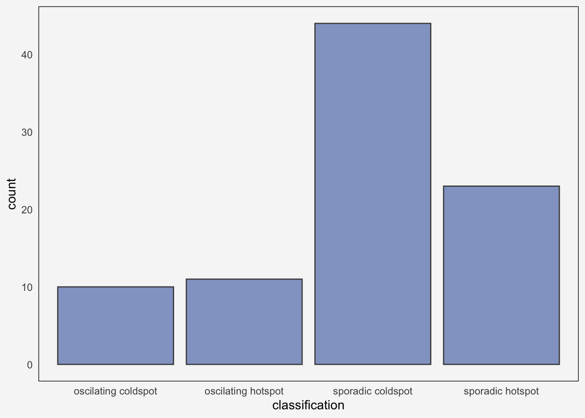
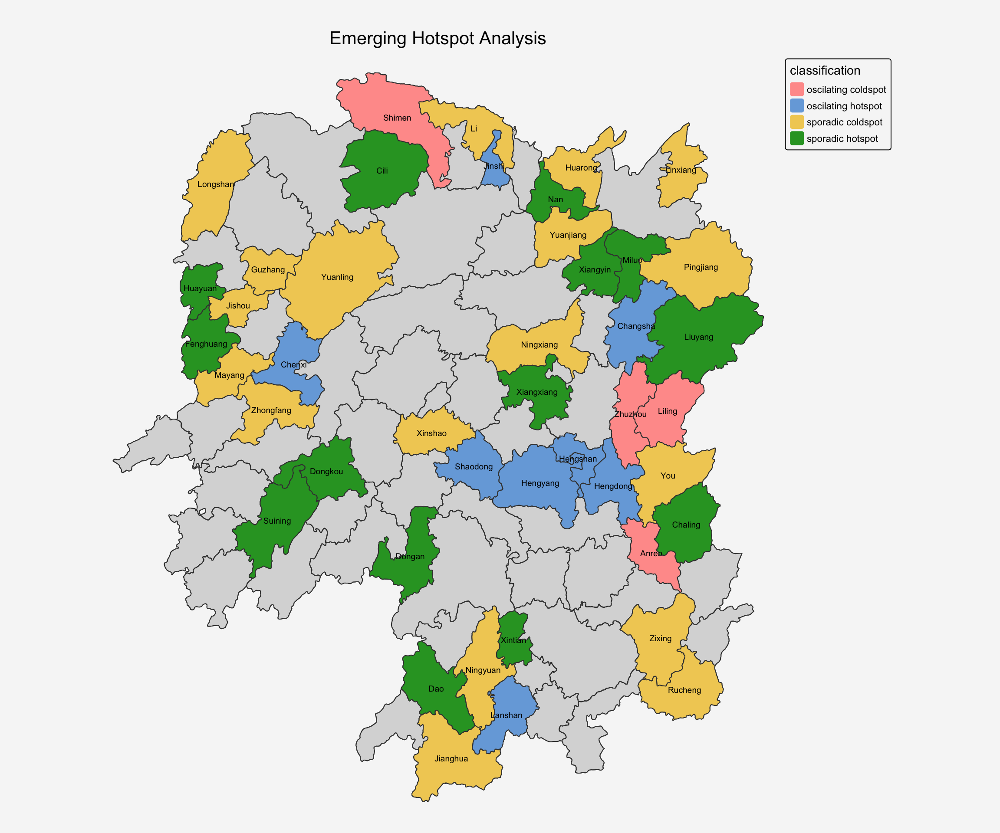
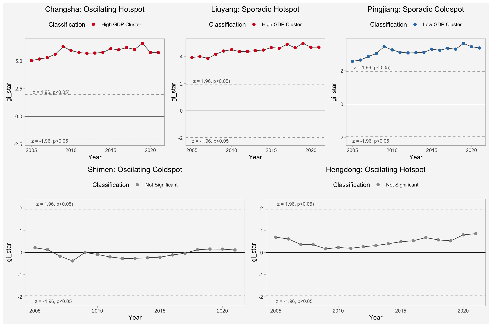
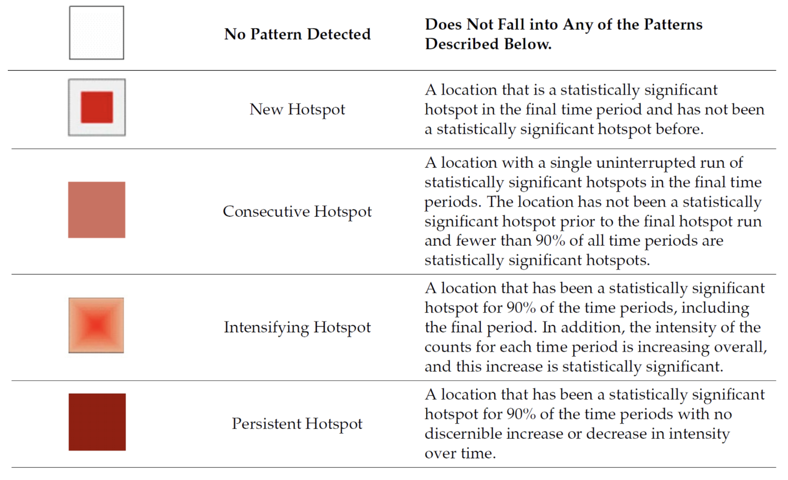
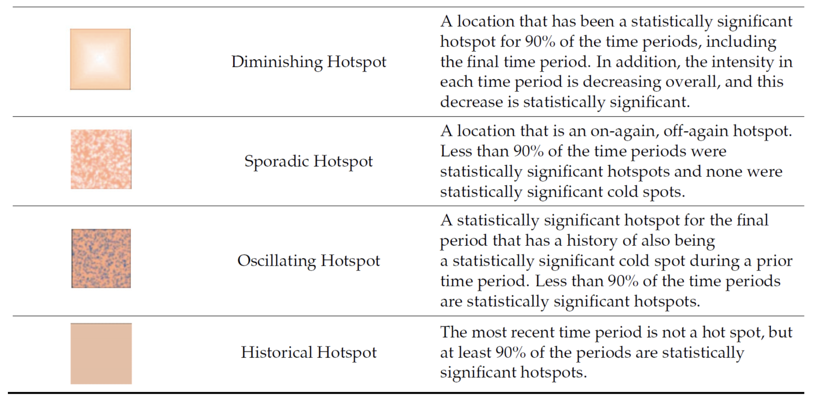
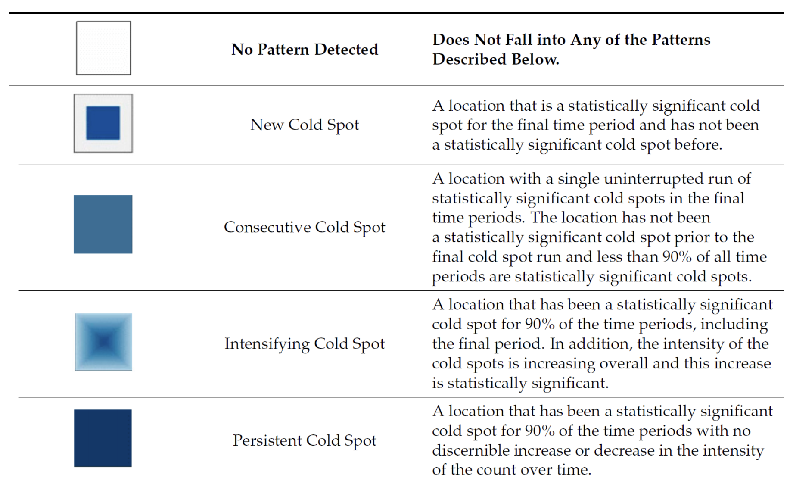
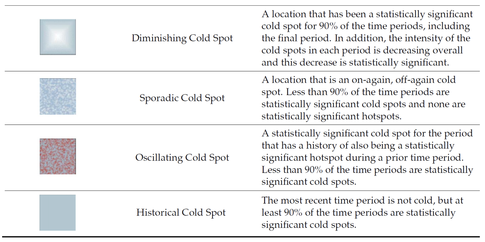

pacman::p_load(sf, sfdep, tmap, plotly, tidyverse, Kendall, patchwork,knitr)In-class 5.b: Emerging Hot Spot Analysis
1 Overview
Emerging Hot Spot Analysis (EHSA) is a spatio-temporal analysis method for revealing and describing how hot spot and cold spot areas evolve over time. The analysis consist of four main steps:
- Building a space-time cube,
- Calculating Getis-Ord local Gi* statistic for each bin by using an FDR correction,
- Evaluating these hot and cold spot trends by using Mann-Kendall trend test,
- Categorising each study area location by referring to the resultant trend z-score and p-value for each location with data, and with the hot spot z-score and p-value for each bin.
- EHSA classifies locations into patterns based on:
Statistical significance (hot spot, cold spot, not significant)
Trend over time (increasing, decreasing, stable)
Consistency (persistent, sporadic, oscillating)
1.1 Comparison
| Analysis | Spatial | Temporal | Output |
|---|---|---|---|
| Gi* | V | X | Hot/cold spots at one time |
| Local Moran’s I | V | X | Clusters + outliers at one time |
| EHSA | V | V | Hot/cold spot trends over time |
2 Getting Started
2.1 Load R packages
2.2 The Data
For the purpose of this in-class exercise, the Hunan data sets will be used. There are two data sets in this use case, they are:
- Hunan, a geospatial data set in ESRI shapefile format, and
- Hunan_GDPPC, an attribute data set in csv format.
Before getting started, reveal the content of Hunan_GDPPC.csv by using Notepad and MS Excel.
2.2.1 Import shapefile
The code chunk below uses st_read() of sf package to import Hunan shapefile into R. The imported shapefile will be simple features Object of sf.
hunan <- st_read(dsn = "data/geospatial",
layer = "Hunan") %>%
st_transform(crs = 32650)Reading layer `Hunan' from data source
`/Users/johsuan/johsuanh/ISSS626-GAA/In-class/In-class-Ex05/data/geospatial'
using driver `ESRI Shapefile'
Simple feature collection with 88 features and 7 fields
Geometry type: POLYGON
Dimension: XY
Bounding box: xmin: 108.7831 ymin: 24.6342 xmax: 114.2544 ymax: 30.12812
Geodetic CRS: WGS 84st_crs(hunan)Coordinate Reference System:
User input: EPSG:32650
wkt:
PROJCRS["WGS 84 / UTM zone 50N",
BASEGEOGCRS["WGS 84",
ENSEMBLE["World Geodetic System 1984 ensemble",
MEMBER["World Geodetic System 1984 (Transit)"],
MEMBER["World Geodetic System 1984 (G730)"],
MEMBER["World Geodetic System 1984 (G873)"],
MEMBER["World Geodetic System 1984 (G1150)"],
MEMBER["World Geodetic System 1984 (G1674)"],
MEMBER["World Geodetic System 1984 (G1762)"],
MEMBER["World Geodetic System 1984 (G2139)"],
MEMBER["World Geodetic System 1984 (G2296)"],
ELLIPSOID["WGS 84",6378137,298.257223563,
LENGTHUNIT["metre",1]],
ENSEMBLEACCURACY[2.0]],
PRIMEM["Greenwich",0,
ANGLEUNIT["degree",0.0174532925199433]],
ID["EPSG",4326]],
CONVERSION["UTM zone 50N",
METHOD["Transverse Mercator",
ID["EPSG",9807]],
PARAMETER["Latitude of natural origin",0,
ANGLEUNIT["degree",0.0174532925199433],
ID["EPSG",8801]],
PARAMETER["Longitude of natural origin",117,
ANGLEUNIT["degree",0.0174532925199433],
ID["EPSG",8802]],
PARAMETER["Scale factor at natural origin",0.9996,
SCALEUNIT["unity",1],
ID["EPSG",8805]],
PARAMETER["False easting",500000,
LENGTHUNIT["metre",1],
ID["EPSG",8806]],
PARAMETER["False northing",0,
LENGTHUNIT["metre",1],
ID["EPSG",8807]]],
CS[Cartesian,2],
AXIS["(E)",east,
ORDER[1],
LENGTHUNIT["metre",1]],
AXIS["(N)",north,
ORDER[2],
LENGTHUNIT["metre",1]],
USAGE[
SCOPE["Navigation and medium accuracy spatial referencing."],
AREA["Between 114°E and 120°E, northern hemisphere between equator and 84°N, onshore and offshore. Brunei. China. Hong Kong. Indonesia. Malaysia - East Malaysia - Sarawak. Mongolia. Philippines. Russian Federation. Taiwan."],
BBOX[0,114,84,120]],
ID["EPSG",32650]]After importing the shape file, let’s plot the graph:
par(bg="#f6f6f6")
plot(hunan)
2.2.2 Import CSV File
Next, we will import Hunan_2012.csv into R by using read_csv() of readr package. The output is R dataframe class.
GDPPC <- read_csv("data/aspatial/Hunan_GDPPC.csv")kable(head(GDPPC))| Year | County | GDPPC |
|---|---|---|
| 2005 | Longshan | 3469 |
| 2005 | Changsha | 24612 |
| 2005 | Wangcheng | 14659 |
| 2005 | Ningxiang | 11687 |
| 2005 | Liuyang | 13406 |
| 2005 | Zhuzhou | 8546 |
2.2.3 Create a Time Series Cube
In the code chunk below, spacetime() of sfdep ised used to create an spatio-temporal cube:
GDPPC_st <- spacetime(GDPPC,hunan,
.loc_col = "County",
.time_col = "Year")
GDPPC_st# A tibble: 1,496 × 3
Year County GDPPC
* <dbl> <chr> <dbl>
1 2005 Longshan 3469
2 2005 Changsha 24612
3 2005 Wangcheng 14659
4 2005 Ningxiang 11687
5 2005 Liuyang 13406
6 2005 Zhuzhou 8546
7 2005 You 10944
8 2005 Chaling 8040
9 2005 Yanling 7383
10 2005 Liling 11688
# ℹ 1,486 more rowsis_spacetime_cube(GDPPC_st)[1] TRUE3 Compute Gi*
Next, we will compute the local Gi* statistics.
3.1 Deriving the spatial weights
The code chunk below will be used to derive an inverse distance weights. Closer neighbors (Weight = 1/distance) have higher influences.
activate()of dplyr package is used to activate the geometry component of the spatial data, telling R to work with the spatial features (polygons/points)mutate()of dplyr package is used to create two new columns nb and wt.- Then we will activate the data context again and copy over the nb and wt columns to each time-slice using
set_nbs()andset_wts()- row order is very important so do not rearrange the observations after using
set_nbs()orset_wts()
- row order is very important so do not rearrange the observations after using
GDPPC_nb <- GDPPC_st %>%
activate("geometry") %>%
mutate(
# includes focal value for Gi* calculation
# Finds neighbors based on shared boundaries(queen method)
nb = include_self(st_contiguity(geometry,queen=TRUE)),
# inverve distance weights
#weight = scale / (distance ^ alpha)
wt = st_inverse_distance(nb, geometry, scale = 1, alpha = 1)
) %>%
set_nbs("nb") %>%
set_wts("wt")Now we can observe the table include variables for year, county, neighbors (include itself) and weights assigned to its neighbors.
kable(head(GDPPC_nb))| Year | County | GDPPC | nb | wt |
|---|---|---|---|---|
| 2005 | Anxiang | 8184 | 1, 2, 3, 4, 57, 85 | 0.000000e+00, 1.535214e-05, 3.582140e-05, 2.166411e-05, 2.885791e-05, 1.064135e-05 |
| 2005 | Hanshou | 6560 | 1, 2, 57, 58, 78, 85 | 1.535214e-05, 0.000000e+00, 1.614606e-05, 1.873186e-05, 2.276814e-05, 1.644739e-05 |
| 2005 | Jinshi | 9956 | 1, 3, 4, 5, 85 | 3.582140e-05, 0.000000e+00, 4.420648e-05, 4.002680e-05, 1.251247e-05 |
| 2005 | Li | 8394 | 1, 3, 4, 5, 6 | 2.166411e-05, 4.420648e-05, 0.000000e+00, 4.600656e-05, 1.738748e-05 |
| 2005 | Linli | 8850 | 3, 4, 5, 6, 85 | 4.002680e-05, 4.600656e-05, 0.000000e+00, 2.105831e-05, 1.392166e-05 |
| 2005 | Shimen | 9244 | 4, 5, 6, 69, 75, 85 | 1.738748e-05, 2.105831e-05, 0.000000e+00, 2.720494e-05, 1.168104e-05, 1.104544e-05 |
Next, we calculate the Gi* for each location per year using local_gstar_perm() for the Gi* calculation permutation test. The result of local_gstar_perm() is presented in a list-column format, contaning columns for Gi*,cluster, e_gi, var_gi, std_dev… Hence, we then use tidyr::unnest() to transform the nested list result into seperate columns:
gi: the observed statistice_gi: the permutation sample meanvar_gi: the permutation sample variancep_value: the p-value using sample mean and standard deviationp_sim: the simulated p-value from the permutation test. The raw p-value from comparing your observed statistic to the permutation distributionp_folded_sim: p-value based on the implementation of Pysal which always assumes a two-sided test taking the minimum possible p-valueskewness: sample skewnesskurtosis: sample kurtosis
set.seed(1234)
gi_stars <- GDPPC_nb %>%
group_by(Year) %>%
mutate(gi_star = local_gstar_perm(GDPPC, nb, wt,
nsim=999, #default
alternative = "two.sided" )) %>% #default
tidyr::unnest(gi_star) %>%
mutate(
classification = case_when(
p_folded_sim <= 0.05 & cluster == "High" ~ "High GDP Cluster",
p_folded_sim <= 0.05 & cluster == "Low" ~ "Low GDP Cluster",
TRUE ~ "Not Significant"
)
)Let’s check the result:
kable(head(gi_stars))| Year | County | GDPPC | nb | wt | gi_star | cluster | e_gi | var_gi | std_dev | p_value | p_sim | p_folded_sim | skewness | kurtosis | classification |
|---|---|---|---|---|---|---|---|---|---|---|---|---|---|---|---|
| 2005 | Anxiang | 8184 | 1, 2, 3, 4, 57, 85 | 0.000000e+00, 1.535214e-05, 3.582140e-05, 2.166411e-05, 2.885791e-05, 1.064135e-05 | 0.3981239 | High | 0.0115783 | 2.8e-06 | 0.3286018 | 0.7424567 | 0.584 | 0.292 | 0.9561178 | 0.9860752 | Not Significant |
| 2005 | Hanshou | 6560 | 1, 2, 57, 58, 78, 85 | 1.535214e-05, 0.000000e+00, 1.614606e-05, 1.873186e-05, 2.276814e-05, 1.644739e-05 | -0.2369095 | Low | 0.0108830 | 2.7e-06 | 0.0147254 | 0.9882513 | 0.830 | 0.415 | 0.8747532 | 0.9090782 | Not Significant |
| 2005 | Jinshi | 9956 | 1, 3, 4, 5, 85 | 3.582140e-05, 0.000000e+00, 4.420648e-05, 4.002680e-05, 1.251247e-05 | 1.0530865 | High | 0.0126140 | 3.0e-06 | 0.5489800 | 0.5830192 | 0.458 | 0.229 | 1.0603495 | 1.6952344 | Not Significant |
| 2005 | Li | 8394 | 1, 3, 4, 5, 6 | 2.166411e-05, 4.420648e-05, 0.000000e+00, 4.600656e-05, 1.738748e-05 | 0.9656557 | High | 0.0117677 | 3.1e-06 | 0.9137805 | 0.3608322 | 0.340 | 0.170 | 0.9557172 | 1.2873111 | Not Significant |
| 2005 | Linli | 8850 | 3, 4, 5, 6, 85 | 4.002680e-05, 4.600656e-05, 0.000000e+00, 2.105831e-05, 1.392166e-05 | 1.0475392 | High | 0.0120329 | 2.9e-06 | 0.8891194 | 0.3739389 | 0.352 | 0.176 | 0.7707301 | 0.4628213 | Not Significant |
| 2005 | Shimen | 9244 | 4, 5, 6, 69, 75, 85 | 1.738748e-05, 2.105831e-05, 0.000000e+00, 2.720494e-05, 1.168104e-05, 1.104544e-05 | 0.2100740 | High | 0.0121006 | 3.0e-06 | -0.1908352 | 0.8486547 | 0.976 | 0.488 | 0.8855153 | 0.8846681 | Not Significant |
4 Mann-Kendall Test
A monotonic series or function is one that only increases (or decreases) and never changes direction. So long as the function either stays flat or continues to increase, it is monotonic.
- H0: No monotonic trend
- H1: Monotonic trend is present
In Emerging Hot Spot Analysis, Mann-Kendall tests whether a location’s Gi* values are trending over time:
- Increasing trend → Intensifying hot/cold spot
- Decreasing trend → Diminishing hot/cold spot
- No trend but significant → Persistent hot/cold spot
Interpretation
Reject the null-hypothesis null if the p-value is smaller than the alpha value (i.e. 1-confident level)
Tau ranges between -1 and 1 where:
-1 is a perfectly decreasing series, and
1 is a perfectly increasing series.
4.1 Mann-Kendall Test on Gi
With these Gi* measures we can then evaluate each location for a trend using the Mann-Kendall test. The code chunk run MK tests on all counties:
mk_results <- gi_stars %>%
group_by(County) %>% # Replace with your county ID variable
summarise(
mk_tau = MannKendall(gi_star)$tau,
mk_pvalue = MannKendall(gi_star)$sl,
trend_direction = case_when(
mk_pvalue > 0.05 ~ "No significant trend",
mk_tau > 0 ~ "Increasing trend",
mk_tau < 0 ~ "Decreasing trend"
)
)We take Changsha for example:
cbg <- gi_stars %>%
ungroup() %>%
filter(County == "Changsha") %>%
select(County, Year, gi_star)c <- ggplot(data = cbg,
aes(x = Year,
y = gi_star)) +
geom_line() +
theme_light()+
theme(panel.background = element_rect(fill = "#f6f6f6"),
plot.background = element_rect(fill = "#f6f6f6",color = NA),
panel.grid = element_blank())
ggplotly(c)changsha_mk <- mk_results %>%
filter (County == "Changsha")
changsha_mk# A tibble: 1 × 4
County mk_tau mk_pvalue trend_direction
<chr> <dbl> <dbl> <chr>
1 Changsha 0.485 0.00742 Increasing trend
Note
This pattern suggests that Changsha experienced increasing spatial concentration (becoming more of a hot spot relative to its neighbors) through most of the time period, but this trend may have reversed or weakened recently.
We can also sort to show significant emerging hot/cold spots by abs tau
emerging_top10 <- mk_results %>%
arrange(mk_pvalue, abs(mk_tau)) %>%
slice(1:10)
kable(emerging_top10)| County | mk_tau | mk_pvalue | trend_direction |
|---|---|---|---|
| Shuangfeng | 0.8676472 | 1.40e-06 | Increasing trend |
| Xiangtan | 0.8676472 | 1.40e-06 | Increasing trend |
| Xiangxiang | 0.8676472 | 1.40e-06 | Increasing trend |
| Chengbu | -0.8235295 | 4.80e-06 | Decreasing trend |
| Dongan | -0.8235295 | 4.80e-06 | Decreasing trend |
| Wugang | -0.8088236 | 7.10e-06 | Decreasing trend |
| Huayuan | -0.7941177 | 1.05e-05 | Decreasing trend |
| Shaoshan | 0.7941177 | 1.05e-05 | Increasing trend |
| Liuyang | 0.7794119 | 1.53e-05 | Increasing trend |
| Zhuzhou | 0.7647060 | 2.21e-05 | Increasing trend |
4.2 Performing Emerging Hotspot Analysis
Lastly, we will perform EHSA analysis by using emerging_hotspot_analysis() of sfdep package. It takes a spacetime object x (i.e. GDPPC_st), and the quoted name of the variable of interest (i.e. GDPPC) for .var argument. The k argument is used to specify the number of time lags which is set to 1 by default. Lastly, nsim map numbers of simulation to be performed.
set.seed(1234)
ehsa <- emerging_hotspot_analysis(
x = GDPPC_nb,
include_gi = TRUE,
.var = "GDPPC",
k = 1, # time lag = 1
nsim = 199, # 200 simulation
nb_col = "nb",
wt_col = "wt",
threshold = 0.05
)ehsa# A tibble: 88 × 4
location tau p_value classification
<chr> <dbl> <dbl> <chr>
1 Anxiang 0.206 0.266 sporadic coldspot
2 Hanshou 0.176 0.343 sporadic hotspot
3 Jinshi 0.721 0.0000645 oscilating hotspot
4 Li -0.853 0.00000217 sporadic coldspot
5 Linli 0.162 0.387 oscilating hotspot
6 Shimen -0.603 0.000848 oscilating coldspot
7 Liuyang 0.853 0.00000215 sporadic hotspot
8 Ningxiang -0.574 0.00151 sporadic coldspot
9 Wangcheng -0.147 0.434 sporadic coldspot
10 Anren 0.412 0.0235 oscilating coldspot
# ℹ 78 more rowsggplot(data = ehsa,
aes(x = classification)) +
geom_bar(fill = "#93A4CC", color = "grey30")+
theme_minimal()+
theme(panel.background = element_rect(fill = "#f6f6f6"),
plot.background = element_rect(fill = "#f6f6f6",color = NA),
panel.grid = element_blank())
4.5 Visualize EHSA
Before we can do so, we need to join both hunan and ehsa together by using the code chunk below.
hunan_ehsa <- hunan %>%
left_join(ehsa,
by = join_by(County == location))Next, tmap functions will be used to plot a categorical choropleth map by using the code chunk below.
ehsa_sig <- hunan_ehsa %>%
filter(p_value < 0.05)
tmap_mode("plot")
tm_shape(hunan_ehsa) +
tm_polygons() +
tm_borders(fill_alpha = 0.5) +
tm_shape(ehsa_sig) +
tm_fill("classification") +
tm_text("NAME_3", size=0.6)+
tm_borders(fill_alpha = 0.4)+
tm_title("Emerging Hotspot Analysis",
position = tm_pos_out("center", "top", "center"))+
tm_layout(
bg.color = "#f6f6f6",
frame = FALSE)
selected_locations <- c("Liuyang", "Changsha", "Pingjiang", "Shimen", "Hengdong")
plot_list <- list()
for (i in selected_locations) {
# data for current county
plot_data <- gi_stars %>%
ungroup() %>%
filter(County == i) %>%
select(County, Year, gi_star, p_folded_sim, classification)
# classification from EHSA results
classification_ehsa <- ehsa %>%
filter(location == i) %>%
pull(classification) %>%
unique()
plot_list[[i]] <- ggplot(data = plot_data, aes(x = Year, y = gi_star, color = classification)) +
geom_hline(yintercept = c(-1.96, 1.96),
linetype = "dashed",
color = "gray50",
alpha = 0.7) +
geom_hline(yintercept = 0, color = "black", linewidth = 0.3) +
geom_line(linewidth = 0.5, color = "gray30") +
geom_point(size = 2) +
annotate("text", x = min(plot_data$Year), y = 2.2,
label = " z = 1.96, p<0.05)",
hjust = 0, size = 3, color = "gray40") +
annotate("text", x = min(plot_data$Year), y = -2.2,
label = "z = -1.96, p<0.05",
hjust = 0, size = 3, color = "gray40") +
# classification from Gi*
scale_color_manual(values = c("High GDP Cluster" = "#d7191c",
"Low GDP Cluster" = "#2c7bb6",
"Not Significant" = "gray60")) +
theme_light() +
labs(title = paste0(i, ": ", tools::toTitleCase(classification_ehsa)),
color = "Classification") +
theme(panel.background = element_rect(fill = "#f6f6f6"),
plot.background = element_rect(fill = "#f6f6f6", color = NA),
panel.grid = element_blank(),
legend.position = "top",
legend.background = element_rect(fill = "#f6f6f6"),
plot.title = element_text(hjust = 0.5))
}
(plot_list[["Changsha"]] + plot_list[["Liuyang"]] + plot_list[["Pingjiang"]]) /
(plot_list[["Shimen"]] + plot_list[["Hengdong"]])
EHSA
selected_locations <- c("Liuyang", "Changsha", "Pingjiang", "Shimen", "Hengdong")
filtered_data <- ehsa_sig %>%
filter(NAME_3 %in% selected_locations)%>%
select(NAME_3, classification, tau, p_value)
kable(filtered_data)| NAME_3 | classification | tau | p_value | geometry |
|---|---|---|---|---|
| Shimen | oscilating coldspot | -0.6029412 | 0.0008481 | POLYGON ((-89888.78 3347561… |
| Liuyang | sporadic hotspot | 0.8529413 | 0.0000021 | POLYGON ((205590.4 3163847,… |
| Hengdong | oscilating hotspot | 0.4117647 | 0.0234762 | POLYGON ((114163.5 3015705,… |
| Pingjiang | sporadic coldspot | -0.4558824 | 0.0119794 | POLYGON ((192667.6 3218916,… |
| Changsha | oscilating hotspot | 0.7500001 | 0.0000317 | POLYGON ((100963.9 3107975,… |
Gi* trend
gi_trend <- mk_results %>%
filter(County %in% selected_locations)
kable(gi_trend)| County | mk_tau | mk_pvalue | trend_direction |
|---|---|---|---|
| Changsha | 0.4852942 | 0.0074170 | Increasing trend |
| Hengdong | 0.3823530 | 0.0356565 | Increasing trend |
| Liuyang | 0.7794119 | 0.0000153 | Increasing trend |
| Pingjiang | 0.6470589 | 0.0003387 | Increasing trend |
| Shimen | 0.1617647 | 0.3870140 | No significant trend |
Gi* details
gi_details <- gi_stars %>%
filter(County %in% selected_locations)
kable(gi_details)| Year | County | GDPPC | nb | wt | gi_star | cluster | e_gi | var_gi | std_dev | p_value | p_sim | p_folded_sim | skewness | kurtosis | classification |
|---|---|---|---|---|---|---|---|---|---|---|---|---|---|---|---|
| 2005 | Shimen | 9244.00 | 4, 5, 6, 69, 75, 85 | 1.738748e-05, 2.105831e-05, 0.000000e+00, 2.720494e-05, 1.168104e-05, 1.104544e-05 | 0.2100740 | High | 0.0121006 | 3.0e-06 | -0.1908352 | 0.8486547 | 0.976 | 0.488 | 0.8855153 | 0.8846681 | Not Significant |
| 2005 | Liuyang | 13406.00 | 7, 67, 71, 74, 84 | 0.000000e+00, 1.638529e-05, 1.535741e-05, 1.126570e-05, 1.801499e-05 | 3.9145467 | High | 0.0142368 | 3.2e-06 | 2.9962566 | 0.0027332 | 0.026 | 0.013 | 1.0435281 | 1.4243454 | High GDP Cluster |
| 2005 | Hengdong | 8066.00 | 10, 19, 20, 21, 73, 74, 86 | 1.459087e-05, 0.000000e+00, 2.601943e-05, 4.545656e-05, 2.176139e-05, 1.760967e-05, 1.455604e-05 | 0.6897773 | High | 0.0115787 | 2.6e-06 | 0.6322083 | 0.5272508 | 0.460 | 0.230 | 0.7792436 | 1.1986134 | Not Significant |
| 2005 | Pingjiang | 5817.00 | 7, 66, 67, 76, 84 | 1.638529e-05, 1.824322e-05, 0.000000e+00, 1.208989e-05, 1.351578e-05 | 2.5626852 | Low | 0.0104466 | 3.0e-06 | 3.6430979 | 0.0002694 | 0.004 | 0.002 | 0.8251446 | 0.9108653 | Low GDP Cluster |
| 2005 | Changsha | 24612.00 | 7, 9, 66, 67, 74, 84, 86 | 1.801499e-05, 3.045389e-05, 1.958839e-05, 1.351578e-05, 1.336567e-05, 0.000000e+00, 1.406726e-05 | 5.0282995 | High | 0.0175778 | 1.8e-06 | 2.0804388 | 0.0374853 | 0.058 | 0.029 | 0.6063296 | 0.8995033 | High GDP Cluster |
| 2006 | Shimen | 10556.00 | 4, 5, 6, 69, 75, 85 | 1.738748e-05, 2.105831e-05, 0.000000e+00, 2.720494e-05, 1.168104e-05, 1.104544e-05 | 0.1267865 | High | 0.0120007 | 2.9e-06 | -0.2299918 | 0.8180981 | 0.948 | 0.474 | 0.7951558 | 0.7317278 | Not Significant |
| 2006 | Liuyang | 15631.00 | 7, 67, 71, 74, 84 | 0.000000e+00, 1.638529e-05, 1.535741e-05, 1.126570e-05, 1.801499e-05 | 3.9896789 | High | 0.0143509 | 3.0e-06 | 3.1702735 | 0.0015230 | 0.014 | 0.007 | 0.8700371 | 0.9161052 | High GDP Cluster |
| 2006 | Hengdong | 9249.00 | 10, 19, 20, 21, 73, 74, 86 | 1.459087e-05, 0.000000e+00, 2.601943e-05, 4.545656e-05, 2.176139e-05, 1.760967e-05, 1.455604e-05 | 0.6106272 | High | 0.0114988 | 2.8e-06 | 0.5806215 | 0.5614956 | 0.506 | 0.253 | 0.6486887 | 0.3721617 | Not Significant |
| 2006 | Pingjiang | 6570.00 | 7, 66, 67, 76, 84 | 1.638529e-05, 1.824322e-05, 0.000000e+00, 1.208989e-05, 1.351578e-05 | 2.6380485 | Low | 0.0105114 | 3.3e-06 | 3.5746702 | 0.0003507 | 0.006 | 0.003 | 0.9455667 | 0.9977911 | Low GDP Cluster |
| 2006 | Changsha | 29407.00 | 7, 9, 66, 67, 74, 84, 86 | 1.801499e-05, 3.045389e-05, 1.958839e-05, 1.351578e-05, 1.336567e-05, 0.000000e+00, 1.406726e-05 | 5.1692011 | High | 0.0178441 | 1.7e-06 | 2.2437285 | 0.0248499 | 0.050 | 0.025 | 0.3213732 | -0.0331491 | High GDP Cluster |
| 2007 | Shimen | 11760.00 | 4, 5, 6, 69, 75, 85 | 1.738748e-05, 2.105831e-05, 0.000000e+00, 2.720494e-05, 1.168104e-05, 1.104544e-05 | -0.1662363 | High | 0.0117549 | 3.1e-06 | -0.4120542 | 0.6802997 | 0.742 | 0.371 | 0.9820615 | 1.4121086 | Not Significant |
| 2007 | Liuyang | 19151.00 | 7, 67, 71, 74, 84 | 0.000000e+00, 1.638529e-05, 1.535741e-05, 1.126570e-05, 1.801499e-05 | 3.8544326 | High | 0.0144749 | 3.3e-06 | 2.9350509 | 0.0033349 | 0.028 | 0.014 | 1.1063137 | 1.5196107 | High GDP Cluster |
| 2007 | Hengdong | 11563.00 | 10, 19, 20, 21, 73, 74, 86 | 1.459087e-05, 0.000000e+00, 2.601943e-05, 4.545656e-05, 2.176139e-05, 1.760967e-05, 1.455604e-05 | 0.3611321 | High | 0.0116928 | 2.9e-06 | 0.2032450 | 0.8389435 | 0.726 | 0.363 | 0.6891334 | 0.5319984 | Not Significant |
| 2007 | Pingjiang | 8065.00 | 7, 66, 67, 76, 84 | 1.638529e-05, 1.824322e-05, 0.000000e+00, 1.208989e-05, 1.351578e-05 | 2.8504878 | Low | 0.0104858 | 3.3e-06 | 3.9385639 | 0.0000820 | 0.010 | 0.005 | 1.1353219 | 1.9432592 | Low GDP Cluster |
| 2007 | Changsha | 36272.00 | 7, 9, 66, 67, 74, 84, 86 | 1.801499e-05, 3.045389e-05, 1.958839e-05, 1.351578e-05, 1.336567e-05, 0.000000e+00, 1.406726e-05 | 5.2958893 | High | 0.0180493 | 1.8e-06 | 2.4129861 | 0.0158224 | 0.032 | 0.016 | 0.4572667 | 0.2380507 | High GDP Cluster |
| 2008 | Shimen | 12902.00 | 4, 5, 6, 69, 75, 85 | 1.738748e-05, 2.105831e-05, 0.000000e+00, 2.720494e-05, 1.168104e-05, 1.104544e-05 | -0.3826165 | High | 0.0113671 | 3.5e-06 | -0.4419739 | 0.6585081 | 0.758 | 0.379 | 1.1508807 | 2.3163215 | Not Significant |
| 2008 | Liuyang | 25545.00 | 7, 67, 71, 74, 84 | 0.000000e+00, 1.638529e-05, 1.535741e-05, 1.126570e-05, 1.801499e-05 | 4.1530907 | High | 0.0150757 | 3.7e-06 | 3.0956705 | 0.0019637 | 0.016 | 0.008 | 0.9562910 | 0.9625991 | High GDP Cluster |
| 2008 | Hengdong | 13874.00 | 10, 19, 20, 21, 73, 74, 86 | 1.459087e-05, 0.000000e+00, 2.601943e-05, 4.545656e-05, 2.176139e-05, 1.760967e-05, 1.455604e-05 | 0.3492512 | High | 0.0115499 | 3.3e-06 | 0.2831131 | 0.7770902 | 0.684 | 0.342 | 0.8438191 | 1.2541112 | Not Significant |
| 2008 | Pingjiang | 9748.00 | 7, 66, 67, 76, 84 | 1.638529e-05, 1.824322e-05, 0.000000e+00, 1.208989e-05, 1.351578e-05 | 3.0244753 | Low | 0.0104968 | 3.9e-06 | 4.0393085 | 0.0000536 | 0.004 | 0.002 | 1.2271099 | 2.4003223 | Low GDP Cluster |
| 2008 | Changsha | 46371.00 | 7, 9, 66, 67, 74, 84, 86 | 1.801499e-05, 3.045389e-05, 1.958839e-05, 1.351578e-05, 1.336567e-05, 0.000000e+00, 1.406726e-05 | 5.6039537 | High | 0.0186690 | 2.1e-06 | 2.6527424 | 0.0079841 | 0.018 | 0.009 | 0.4361139 | -0.0136641 | High GDP Cluster |
| 2009 | Shimen | 17355.00 | 4, 5, 6, 69, 75, 85 | 1.738748e-05, 2.105831e-05, 0.000000e+00, 2.720494e-05, 1.168104e-05, 1.104544e-05 | 0.0013305 | High | 0.0119409 | 4.7e-06 | -0.2659625 | 0.7902681 | 0.914 | 0.457 | 1.3518643 | 2.7633133 | Not Significant |
| 2009 | Liuyang | 31397.00 | 7, 67, 71, 74, 84 | 0.000000e+00, 1.638529e-05, 1.535741e-05, 1.126570e-05, 1.801499e-05 | 4.3920617 | High | 0.0157221 | 5.1e-06 | 3.2690151 | 0.0010792 | 0.028 | 0.014 | 1.5211959 | 3.4725222 | High GDP Cluster |
| 2009 | Hengdong | 16461.00 | 10, 19, 20, 21, 73, 74, 86 | 1.459087e-05, 0.000000e+00, 2.601943e-05, 4.545656e-05, 2.176139e-05, 1.760967e-05, 1.455604e-05 | 0.1637461 | High | 0.0117811 | 4.5e-06 | -0.0199580 | 0.9840769 | 0.832 | 0.416 | 1.0924597 | 1.2646048 | Not Significant |
| 2009 | Pingjiang | 10617.00 | 7, 66, 67, 76, 84 | 1.638529e-05, 1.824322e-05, 0.000000e+00, 1.208989e-05, 1.351578e-05 | 3.4419788 | Low | 0.0104404 | 5.1e-06 | 4.4702312 | 0.0000078 | 0.006 | 0.003 | 1.3708469 | 3.0660661 | Low GDP Cluster |
| 2009 | Changsha | 64022.00 | 7, 9, 66, 67, 74, 84, 86 | 1.801499e-05, 3.045389e-05, 1.958839e-05, 1.351578e-05, 1.336567e-05, 0.000000e+00, 1.406726e-05 | 6.2788862 | High | 0.0207965 | 2.5e-06 | 3.1221951 | 0.0017951 | 0.010 | 0.005 | 0.5641237 | 0.0777553 | High GDP Cluster |
| 2010 | Shimen | 20501.00 | 4, 5, 6, 69, 75, 85 | 1.738748e-05, 2.105831e-05, 0.000000e+00, 2.720494e-05, 1.168104e-05, 1.104544e-05 | -0.0902539 | High | 0.0118922 | 5.0e-06 | -0.3373175 | 0.7358776 | 0.858 | 0.429 | 1.1581986 | 1.9064782 | Not Significant |
| 2010 | Liuyang | 42619.32 | 7, 67, 71, 74, 84 | 0.000000e+00, 1.638529e-05, 1.535741e-05, 1.126570e-05, 1.801499e-05 | 4.4921872 | High | 0.0167828 | 5.3e-06 | 2.9167370 | 0.0035371 | 0.028 | 0.014 | 1.2654892 | 2.3799223 | High GDP Cluster |
| 2010 | Hengdong | 19781.00 | 10, 19, 20, 21, 73, 74, 86 | 1.459087e-05, 0.000000e+00, 2.601943e-05, 4.545656e-05, 2.176139e-05, 1.760967e-05, 1.455604e-05 | 0.2249599 | High | 0.0118392 | 4.3e-06 | 0.0209623 | 0.9832758 | 0.858 | 0.429 | 0.8082357 | 0.8348503 | Not Significant |
| 2010 | Pingjiang | 12527.00 | 7, 66, 67, 76, 84 | 1.638529e-05, 1.824322e-05, 0.000000e+00, 1.208989e-05, 1.351578e-05 | 3.2461026 | Low | 0.0104415 | 5.4e-06 | 4.1518484 | 0.0000330 | 0.002 | 0.001 | 0.9839029 | 0.9286616 | Low GDP Cluster |
| 2010 | Changsha | 70604.01 | 7, 9, 66, 67, 74, 84, 86 | 1.801499e-05, 3.045389e-05, 1.958839e-05, 1.351578e-05, 1.336567e-05, 0.000000e+00, 1.406726e-05 | 5.9357456 | High | 0.0198289 | 3.1e-06 | 2.9687274 | 0.0029904 | 0.016 | 0.008 | 0.7673458 | 1.1310392 | High GDP Cluster |
| 2011 | Shimen | 24409.00 | 4, 5, 6, 69, 75, 85 | 1.738748e-05, 2.105831e-05, 0.000000e+00, 2.720494e-05, 1.168104e-05, 1.104544e-05 | -0.2018753 | High | 0.0116709 | 4.2e-06 | -0.3975700 | 0.6909472 | 0.820 | 0.410 | 0.7101542 | 0.2867609 | Not Significant |
| 2011 | Liuyang | 54768.72 | 7, 67, 71, 74, 84 | 0.000000e+00, 1.638529e-05, 1.535741e-05, 1.126570e-05, 1.801499e-05 | 4.3470262 | High | 0.0170344 | 5.3e-06 | 2.7252343 | 0.0064256 | 0.030 | 0.015 | 1.3092954 | 2.6366305 | High GDP Cluster |
| 2011 | Hengdong | 24044.00 | 10, 19, 20, 21, 73, 74, 86 | 1.459087e-05, 0.000000e+00, 2.601943e-05, 4.545656e-05, 2.176139e-05, 1.760967e-05, 1.455604e-05 | 0.1882778 | High | 0.0117272 | 4.6e-06 | 0.0368208 | 0.9706279 | 0.852 | 0.426 | 0.8678353 | 0.8354058 | Not Significant |
| 2011 | Pingjiang | 15105.53 | 7, 66, 67, 76, 84 | 1.638529e-05, 1.824322e-05, 0.000000e+00, 1.208989e-05, 1.351578e-05 | 3.1053957 | Low | 0.0100544 | 5.0e-06 | 4.4236686 | 0.0000097 | 0.006 | 0.003 | 1.2172416 | 1.8342085 | Low GDP Cluster |
| 2011 | Changsha | 80356.00 | 7, 9, 66, 67, 74, 84, 86 | 1.801499e-05, 3.045389e-05, 1.958839e-05, 1.351578e-05, 1.336567e-05, 0.000000e+00, 1.406726e-05 | 5.7508709 | High | 0.0189401 | 3.4e-06 | 3.2374373 | 0.0012061 | 0.012 | 0.006 | 0.6408000 | 0.4078581 | High GDP Cluster |
| 2012 | Shimen | 27137.00 | 4, 5, 6, 69, 75, 85 | 1.738748e-05, 2.105831e-05, 0.000000e+00, 2.720494e-05, 1.168104e-05, 1.104544e-05 | -0.2710334 | High | 0.0117889 | 5.1e-06 | -0.4932149 | 0.6218608 | 0.766 | 0.383 | 0.8760180 | 0.6850228 | Not Significant |
| 2012 | Liuyang | 63118.00 | 7, 67, 71, 74, 84 | 0.000000e+00, 1.638529e-05, 1.535741e-05, 1.126570e-05, 1.801499e-05 | 4.3660736 | High | 0.0173014 | 5.3e-06 | 2.6336429 | 0.0084474 | 0.042 | 0.021 | 1.1879606 | 1.7016596 | High GDP Cluster |
| 2012 | Hengdong | 27485.00 | 10, 19, 20, 21, 73, 74, 86 | 1.459087e-05, 0.000000e+00, 2.601943e-05, 4.545656e-05, 2.176139e-05, 1.760967e-05, 1.455604e-05 | 0.2593820 | High | 0.0117361 | 4.7e-06 | 0.1102409 | 0.9122183 | 0.774 | 0.387 | 0.8800522 | 0.6562462 | Not Significant |
| 2012 | Pingjiang | 17252.00 | 7, 66, 67, 76, 84 | 1.638529e-05, 1.824322e-05, 0.000000e+00, 1.208989e-05, 1.351578e-05 | 3.0661104 | Low | 0.0102107 | 5.1e-06 | 4.2278243 | 0.0000236 | 0.004 | 0.002 | 1.0808071 | 1.7090404 | Low GDP Cluster |
| 2012 | Changsha | 88656.00 | 7, 9, 66, 67, 74, 84, 86 | 1.801499e-05, 3.045389e-05, 1.958839e-05, 1.351578e-05, 1.336567e-05, 0.000000e+00, 1.406726e-05 | 5.6942476 | High | 0.0186672 | 4.0e-06 | 3.0446908 | 0.0023292 | 0.020 | 0.010 | 0.9368679 | 1.4974016 | High GDP Cluster |
| 2013 | Shimen | 30054.00 | 4, 5, 6, 69, 75, 85 | 1.738748e-05, 2.105831e-05, 0.000000e+00, 2.720494e-05, 1.168104e-05, 1.104544e-05 | -0.2661413 | High | 0.0117730 | 5.1e-06 | -0.4832497 | 0.6289184 | 0.744 | 0.372 | 0.8372762 | 0.3544739 | Not Significant |
| 2013 | Liuyang | 71634.00 | 7, 67, 71, 74, 84 | 0.000000e+00, 1.638529e-05, 1.535741e-05, 1.126570e-05, 1.801499e-05 | 4.4214245 | High | 0.0173833 | 4.4e-06 | 2.9622250 | 0.0030542 | 0.026 | 0.013 | 0.9921599 | 0.9347864 | High GDP Cluster |
| 2013 | Hengdong | 30326.00 | 10, 19, 20, 21, 73, 74, 86 | 1.459087e-05, 0.000000e+00, 2.601943e-05, 4.545656e-05, 2.176139e-05, 1.760967e-05, 1.455604e-05 | 0.3108210 | High | 0.0117623 | 4.9e-06 | 0.1525130 | 0.8787823 | 0.770 | 0.385 | 0.7055318 | 0.1738581 | Not Significant |
| 2013 | Pingjiang | 19076.00 | 7, 66, 67, 76, 84 | 1.638529e-05, 1.824322e-05, 0.000000e+00, 1.208989e-05, 1.351578e-05 | 3.0751967 | Low | 0.0102934 | 5.2e-06 | 4.2035041 | 0.0000263 | 0.004 | 0.002 | 0.8832453 | 0.5871164 | Low GDP Cluster |
| 2013 | Changsha | 97249.00 | 7, 9, 66, 67, 74, 84, 86 | 1.801499e-05, 3.045389e-05, 1.958839e-05, 1.351578e-05, 1.336567e-05, 0.000000e+00, 1.406726e-05 | 5.7085054 | High | 0.0185334 | 3.6e-06 | 3.3800498 | 0.0007247 | 0.010 | 0.005 | 0.6721823 | 0.6420895 | High GDP Cluster |
| 2014 | Shimen | 32286.00 | 4, 5, 6, 69, 75, 85 | 1.738748e-05, 2.105831e-05, 0.000000e+00, 2.720494e-05, 1.168104e-05, 1.104544e-05 | -0.2398199 | High | 0.0117445 | 4.8e-06 | -0.4525982 | 0.6508381 | 0.824 | 0.412 | 0.8524189 | 0.4817711 | Not Significant |
| 2014 | Liuyang | 78127.00 | 7, 67, 71, 74, 84 | 0.000000e+00, 1.638529e-05, 1.535741e-05, 1.126570e-05, 1.801499e-05 | 4.4657938 | High | 0.0174848 | 5.1e-06 | 2.7745897 | 0.0055271 | 0.036 | 0.018 | 1.1201588 | 1.4426892 | High GDP Cluster |
| 2014 | Hengdong | 33307.00 | 10, 19, 20, 21, 73, 74, 86 | 1.459087e-05, 0.000000e+00, 2.601943e-05, 4.545656e-05, 2.176139e-05, 1.760967e-05, 1.455604e-05 | 0.3947053 | High | 0.0116784 | 4.6e-06 | 0.2877645 | 0.7735270 | 0.660 | 0.330 | 0.9682571 | 0.9864046 | Not Significant |
| 2014 | Pingjiang | 20521.00 | 7, 66, 67, 76, 84 | 1.638529e-05, 1.824322e-05, 0.000000e+00, 1.208989e-05, 1.351578e-05 | 3.1019030 | Low | 0.0101311 | 5.0e-06 | 4.4056338 | 0.0000105 | 0.002 | 0.001 | 0.9102668 | 0.7574401 | Low GDP Cluster |
| 2014 | Changsha | 107562.00 | 7, 9, 66, 67, 74, 84, 86 | 1.801499e-05, 3.045389e-05, 1.958839e-05, 1.351578e-05, 1.336567e-05, 0.000000e+00, 1.406726e-05 | 5.7608122 | High | 0.0185360 | 3.7e-06 | 3.3695821 | 0.0007528 | 0.014 | 0.007 | 0.8183595 | 0.7085247 | High GDP Cluster |
| 2015 | Shimen | 35202.00 | 4, 5, 6, 69, 75, 85 | 1.738748e-05, 2.105831e-05, 0.000000e+00, 2.720494e-05, 1.168104e-05, 1.104544e-05 | -0.2120229 | High | 0.0116896 | 5.6e-06 | -0.3726742 | 0.7093910 | 0.852 | 0.426 | 1.2233345 | 1.9674780 | Not Significant |
| 2015 | Liuyang | 85426.00 | 7, 67, 71, 74, 84 | 0.000000e+00, 1.638529e-05, 1.535741e-05, 1.126570e-05, 1.801499e-05 | 4.6490522 | High | 0.0175387 | 5.4e-06 | 3.0123924 | 0.0025920 | 0.024 | 0.012 | 1.1689975 | 1.3312753 | High GDP Cluster |
| 2015 | Hengdong | 36790.00 | 10, 19, 20, 21, 73, 74, 86 | 1.459087e-05, 0.000000e+00, 2.601943e-05, 4.545656e-05, 2.176139e-05, 1.760967e-05, 1.455604e-05 | 0.4846116 | High | 0.0118404 | 5.2e-06 | 0.3048118 | 0.7605095 | 0.658 | 0.329 | 1.0665963 | 1.5838602 | Not Significant |
| 2015 | Pingjiang | 22238.00 | 7, 66, 67, 76, 84 | 1.638529e-05, 1.824322e-05, 0.000000e+00, 1.208989e-05, 1.351578e-05 | 3.2875348 | Low | 0.0101968 | 5.9e-06 | 4.2968853 | 0.0000173 | 0.002 | 0.001 | 1.1397993 | 1.2084754 | Low GDP Cluster |
| 2015 | Changsha | 128715.00 | 7, 9, 66, 67, 74, 84, 86 | 1.801499e-05, 3.045389e-05, 1.958839e-05, 1.351578e-05, 1.336567e-05, 0.000000e+00, 1.406726e-05 | 6.0971272 | High | 0.0197104 | 3.8e-06 | 3.3111285 | 0.0009292 | 0.008 | 0.004 | 0.7826219 | 0.4080632 | High GDP Cluster |
| 2016 | Shimen | 39871.00 | 4, 5, 6, 69, 75, 85 | 1.738748e-05, 2.105831e-05, 0.000000e+00, 2.720494e-05, 1.168104e-05, 1.104544e-05 | -0.1127068 | High | 0.0117495 | 4.7e-06 | -0.3111060 | 0.7557200 | 0.912 | 0.456 | 0.8865448 | 0.6182769 | Not Significant |
| 2016 | Liuyang | 92823.00 | 7, 67, 71, 74, 84 | 0.000000e+00, 1.638529e-05, 1.535741e-05, 1.126570e-05, 1.801499e-05 | 4.6003619 | High | 0.0173142 | 4.8e-06 | 3.1270945 | 0.0017654 | 0.032 | 0.016 | 1.3794972 | 2.9865140 | High GDP Cluster |
| 2016 | Hengdong | 41012.00 | 10, 19, 20, 21, 73, 74, 86 | 1.459087e-05, 0.000000e+00, 2.601943e-05, 4.545656e-05, 2.176139e-05, 1.760967e-05, 1.455604e-05 | 0.5297775 | High | 0.0119013 | 4.6e-06 | 0.3350800 | 0.7375647 | 0.646 | 0.323 | 0.8152479 | 0.5179060 | Not Significant |
| 2016 | Pingjiang | 24369.00 | 7, 66, 67, 76, 84 | 1.638529e-05, 1.824322e-05, 0.000000e+00, 1.208989e-05, 1.351578e-05 | 3.2259000 | Low | 0.0102767 | 6.7e-06 | 3.8847494 | 0.0001024 | 0.010 | 0.005 | 1.3492001 | 2.1813449 | Low GDP Cluster |
| 2016 | Changsha | 135712.00 | 7, 9, 66, 67, 74, 84, 86 | 1.801499e-05, 3.045389e-05, 1.958839e-05, 1.351578e-05, 1.336567e-05, 0.000000e+00, 1.406726e-05 | 6.0036548 | High | 0.0191664 | 3.3e-06 | 3.5769798 | 0.0003476 | 0.008 | 0.004 | 0.8118429 | 0.8510730 | High GDP Cluster |
| 2017 | Shimen | 41855.00 | 4, 5, 6, 69, 75, 85 | 1.738748e-05, 2.105831e-05, 0.000000e+00, 2.720494e-05, 1.168104e-05, 1.104544e-05 | -0.0342940 | High | 0.0118549 | 5.0e-06 | -0.2574014 | 0.7968689 | 0.926 | 0.463 | 1.0715341 | 1.5378854 | Not Significant |
| 2017 | Liuyang | 98683.00 | 7, 67, 71, 74, 84 | 0.000000e+00, 1.638529e-05, 1.535741e-05, 1.126570e-05, 1.801499e-05 | 4.8895243 | High | 0.0176975 | 4.8e-06 | 3.1655348 | 0.0015480 | 0.026 | 0.013 | 1.0887191 | 1.4469844 | High GDP Cluster |
| 2017 | Hengdong | 43995.00 | 10, 19, 20, 21, 73, 74, 86 | 1.459087e-05, 0.000000e+00, 2.601943e-05, 4.545656e-05, 2.176139e-05, 1.760967e-05, 1.455604e-05 | 0.6716944 | High | 0.0118978 | 4.4e-06 | 0.4886620 | 0.6250810 | 0.550 | 0.275 | 0.7519580 | 0.2728550 | Not Significant |
| 2017 | Pingjiang | 26209.00 | 7, 66, 67, 76, 84 | 1.638529e-05, 1.824322e-05, 0.000000e+00, 1.208989e-05, 1.351578e-05 | 3.3467259 | Low | 0.0104698 | 6.0e-06 | 4.0910196 | 0.0000429 | 0.008 | 0.004 | 1.1496042 | 1.6196385 | Low GDP Cluster |
| 2017 | Changsha | 144225.00 | 7, 9, 66, 67, 74, 84, 86 | 1.801499e-05, 3.045389e-05, 1.958839e-05, 1.351578e-05, 1.336567e-05, 0.000000e+00, 1.406726e-05 | 6.2028054 | High | 0.0194094 | 3.1e-06 | 3.5928321 | 0.0003271 | 0.010 | 0.005 | 0.7925709 | 1.0197739 | High GDP Cluster |
| 2018 | Shimen | 46830.37 | 4, 5, 6, 69, 75, 85 | 1.738748e-05, 2.105831e-05, 0.000000e+00, 2.720494e-05, 1.168104e-05, 1.104544e-05 | 0.1235592 | High | 0.0121089 | 4.4e-06 | -0.2147911 | 0.8299302 | 0.950 | 0.475 | 0.8987086 | 0.8437718 | Not Significant |
| 2018 | Liuyang | 100200.10 | 7, 67, 71, 74, 84 | 0.000000e+00, 1.638529e-05, 1.535741e-05, 1.126570e-05, 1.801499e-05 | 4.6287538 | High | 0.0172315 | 4.7e-06 | 2.8121171 | 0.0049217 | 0.028 | 0.014 | 1.1053742 | 1.6895438 | High GDP Cluster |
| 2018 | Hengdong | 45690.89 | 10, 19, 20, 21, 73, 74, 86 | 1.459087e-05, 0.000000e+00, 2.601943e-05, 4.545656e-05, 2.176139e-05, 1.760967e-05, 1.455604e-05 | 0.5680550 | High | 0.0117697 | 3.9e-06 | 0.4284739 | 0.6683061 | 0.600 | 0.300 | 0.8072315 | 0.8716520 | Not Significant |
| 2018 | Pingjiang | 28944.92 | 7, 66, 67, 76, 84 | 1.638529e-05, 1.824322e-05, 0.000000e+00, 1.208989e-05, 1.351578e-05 | 3.2903525 | Low | 0.0105055 | 5.0e-06 | 4.1621441 | 0.0000315 | 0.004 | 0.002 | 0.9694442 | 1.0236755 | Low GDP Cluster |
| 2018 | Changsha | 141720.70 | 7, 9, 66, 67, 74, 84, 86 | 1.801499e-05, 3.045389e-05, 1.958839e-05, 1.351578e-05, 1.336567e-05, 0.000000e+00, 1.406726e-05 | 6.0371816 | High | 0.0186022 | 3.0e-06 | 3.4929951 | 0.0004776 | 0.004 | 0.002 | 0.6575525 | 0.2870831 | High GDP Cluster |
| 2019 | Shimen | 50646.03 | 4, 5, 6, 69, 75, 85 | 1.738748e-05, 2.105831e-05, 0.000000e+00, 2.720494e-05, 1.168104e-05, 1.104544e-05 | 0.1555580 | High | 0.0121582 | 4.3e-06 | -0.2101345 | 0.8335627 | 0.986 | 0.493 | 0.9208088 | 0.9001146 | Not Significant |
| 2019 | Liuyang | 103409.33 | 7, 67, 71, 74, 84 | 0.000000e+00, 1.638529e-05, 1.535741e-05, 1.126570e-05, 1.801499e-05 | 4.9541633 | High | 0.0170232 | 3.9e-06 | 3.4433341 | 0.0005746 | 0.016 | 0.008 | 1.1213893 | 1.5380758 | High GDP Cluster |
| 2019 | Hengdong | 45032.22 | 10, 19, 20, 21, 73, 74, 86 | 1.459087e-05, 0.000000e+00, 2.601943e-05, 4.545656e-05, 2.176139e-05, 1.760967e-05, 1.455604e-05 | 0.5261786 | High | 0.0117209 | 4.1e-06 | 0.3797533 | 0.7041286 | 0.608 | 0.304 | 0.9200753 | 1.1048882 | Not Significant |
| 2019 | Pingjiang | 33079.13 | 7, 66, 67, 76, 84 | 1.638529e-05, 1.824322e-05, 0.000000e+00, 1.208989e-05, 1.351578e-05 | 3.6368025 | Low | 0.0105446 | 4.6e-06 | 4.6480004 | 0.0000034 | 0.004 | 0.002 | 1.2790554 | 2.1472523 | Low GDP Cluster |
| 2019 | Changsha | 155564.46 | 7, 9, 66, 67, 74, 84, 86 | 1.801499e-05, 3.045389e-05, 1.958839e-05, 1.351578e-05, 1.336567e-05, 0.000000e+00, 1.406726e-05 | 6.5794322 | High | 0.0190638 | 2.8e-06 | 3.8641298 | 0.0001115 | 0.004 | 0.002 | 0.5882974 | 0.1596242 | High GDP Cluster |
| 2020 | Shimen | 55881.31 | 4, 5, 6, 69, 75, 85 | 1.738748e-05, 2.105831e-05, 0.000000e+00, 2.720494e-05, 1.168104e-05, 1.104544e-05 | 0.1506746 | High | 0.0120411 | 3.0e-06 | -0.2203634 | 0.8255882 | 0.938 | 0.469 | 0.7725691 | 0.5931705 | Not Significant |
| 2020 | Liuyang | 105244.85 | 7, 67, 71, 74, 84 | 0.000000e+00, 1.638529e-05, 1.535741e-05, 1.126570e-05, 1.801499e-05 | 4.6733226 | High | 0.0161233 | 3.2e-06 | 2.8969530 | 0.0037681 | 0.032 | 0.016 | 0.8563710 | 1.0413589 | High GDP Cluster |
| 2020 | Hengdong | 50975.21 | 10, 19, 20, 21, 73, 74, 86 | 1.459087e-05, 0.000000e+00, 2.601943e-05, 4.545656e-05, 2.176139e-05, 1.760967e-05, 1.455604e-05 | 0.7965193 | High | 0.0115849 | 2.7e-06 | 0.7497865 | 0.4533833 | 0.432 | 0.216 | 0.5152576 | 0.0685638 | Not Significant |
| 2020 | Pingjiang | 34746.77 | 7, 66, 67, 76, 84 | 1.638529e-05, 1.824322e-05, 0.000000e+00, 1.208989e-05, 1.351578e-05 | 3.4381456 | Low | 0.0104486 | 3.3e-06 | 4.5570300 | 0.0000052 | 0.002 | 0.001 | 0.7478796 | 0.5063491 | Low GDP Cluster |
| 2020 | Changsha | 134409.31 | 7, 9, 66, 67, 74, 84, 86 | 1.801499e-05, 3.045389e-05, 1.958839e-05, 1.351578e-05, 1.336567e-05, 0.000000e+00, 1.406726e-05 | 5.7669156 | High | 0.0165989 | 2.4e-06 | 3.3972763 | 0.0006806 | 0.006 | 0.003 | 0.5831524 | 0.1568492 | High GDP Cluster |
| 2021 | Shimen | 61489.87 | 4, 5, 6, 69, 75, 85 | 1.738748e-05, 2.105831e-05, 0.000000e+00, 2.720494e-05, 1.168104e-05, 1.104544e-05 | 0.1120663 | High | 0.0120649 | 2.8e-06 | -0.2889202 | 0.7726424 | 0.858 | 0.429 | 0.6598153 | 0.3617258 | Not Significant |
| 2021 | Liuyang | 112990.98 | 7, 67, 71, 74, 84 | 0.000000e+00, 1.638529e-05, 1.535741e-05, 1.126570e-05, 1.801499e-05 | 4.6775223 | High | 0.0159288 | 3.0e-06 | 3.0837267 | 0.0020443 | 0.010 | 0.005 | 0.6895814 | 0.4215539 | High GDP Cluster |
| 2021 | Hengdong | 56094.09 | 10, 19, 20, 21, 73, 74, 86 | 1.459087e-05, 0.000000e+00, 2.601943e-05, 4.545656e-05, 2.176139e-05, 1.760967e-05, 1.455604e-05 | 0.8503319 | High | 0.0116613 | 2.5e-06 | 0.7838542 | 0.4331257 | 0.446 | 0.223 | 0.3823485 | -0.2759526 | Not Significant |
| 2021 | Pingjiang | 38165.79 | 7, 66, 67, 76, 84 | 1.638529e-05, 1.824322e-05, 0.000000e+00, 1.208989e-05, 1.351578e-05 | 3.3636225 | Low | 0.0103708 | 2.9e-06 | 4.7717264 | 0.0000018 | 0.002 | 0.001 | 0.6797045 | 0.1782341 | Low GDP Cluster |
| 2021 | Changsha | 144308.98 | 7, 9, 66, 67, 74, 84, 86 | 1.801499e-05, 3.045389e-05, 1.958839e-05, 1.351578e-05, 1.336567e-05, 0.000000e+00, 1.406726e-05 | 5.7486535 | High | 0.0164688 | 2.2e-06 | 3.5412756 | 0.0003982 | 0.004 | 0.002 | 0.5330981 | 0.1518153 | High GDP Cluster |
4.6 Interpretation of EHSA classes
In Emerging Hotspot Analysis (EHAS), the study area for each location includes both the location itself AND its neighbors.
4.6.1 Hot Spot


4.6.2 Cold Spot


5 Reference
- Leary, H. (2023): R Tutorial: Hotspot Analysis using Getis Ord Gi